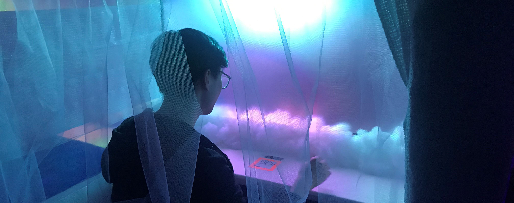
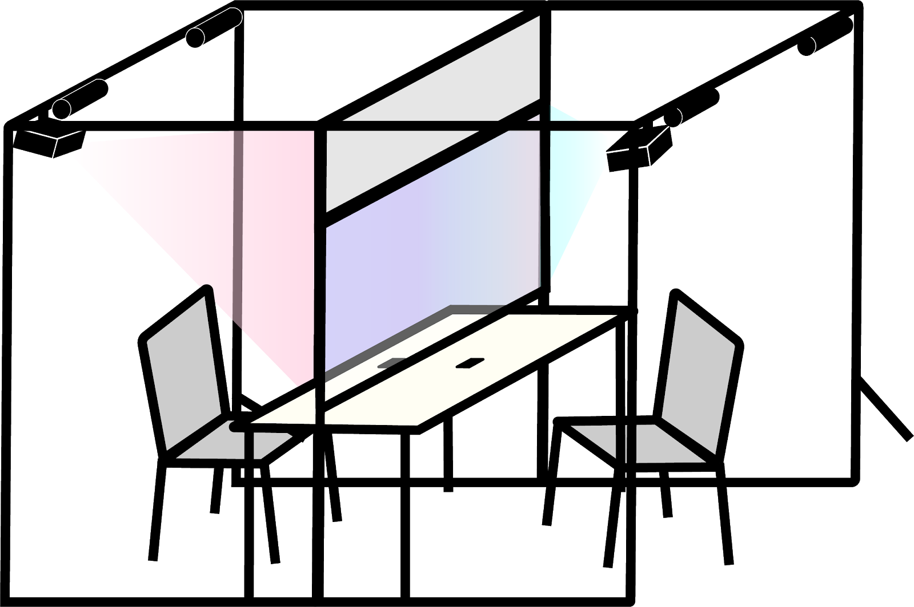
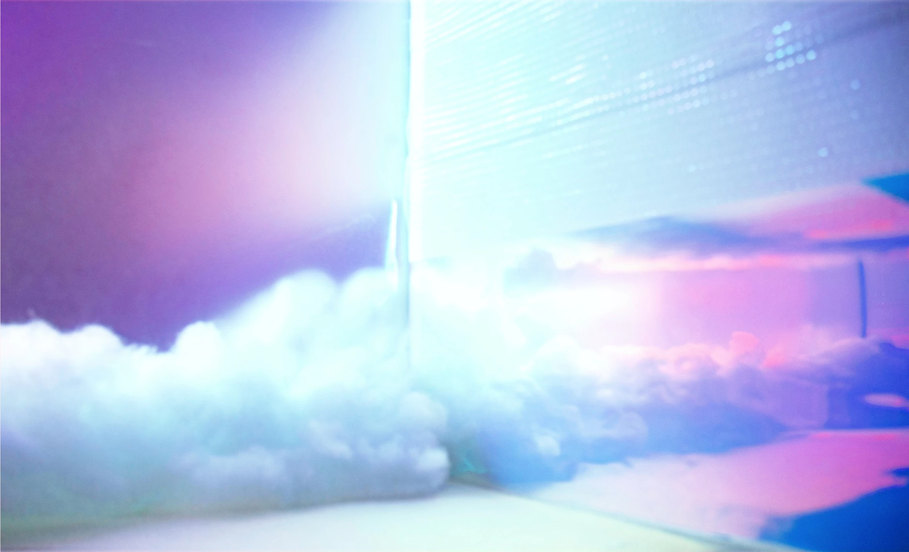

DUET is a ‘Social Sonic Interface’ — a collaborative space where two isolated participants work
together to create an audio-visual experience through gesture-based interaction. Participants are
encouraged to collaborate with a stranger or invite a friend.
MY ROLE
Creative Director, Project Manager
TEAM
2 Designer, 2 Engineers, 1 Project Manager

OBJECTIVE
The project was inspired by the power of collaboration within the creative process. The objective of
this installation was to foster collaboration: to depict the joys and gratification of joint, human
effort and socialization. We decided the best way to communicate this was through music making.
PROCESS
To tackle the design brief we assigned roles and iterated through a myriad of ideas. After listing
ideas, we voted on them as a group and researched the most popular ones. The team was divided into
digital & physical construction teams with members going between the two teams as
needed.
DIGITAL TEAM
The digital team was responsible for creating the user interface, the audio-visuals & other software
systems. After iterating through prototypes the digital team landed on a solution that was intuitive
& magical. The team decided to have a gesture-interface as the core interaction point. Users could
then create beautiful melodies simply by waving their hands around a gesture-sensor like a
conductor.
PHYSICAL TEAM
The physical team was responsible for fabricating the entire project. The team engineered &
decorated a sturdy space the simultaneously took into account user needs such as comfort,
accessibility, etc while hiding the tech effectively. The space was built to decontextualise the
user from their usual experience of environments.




COLLABORATION HICCUPS
For a project exploring themes of collaboration, the team involved in making it experienced some
issues with teamwork. The main issues were clashes of ego & some miscommunication. As the project
manager it was my job to remedy these conflicts.
I increased empathy for team members through fostering effective communication between team members. Effective communication lead to more empathy & care for each other. When people cared about their team members, they tended to puat aside their ego, focus on the goal & work harder for themselves & their team mates.
I increased empathy for team members through fostering effective communication between team members. Effective communication lead to more empathy & care for each other. When people cared about their team members, they tended to puat aside their ego, focus on the goal & work harder for themselves & their team mates.